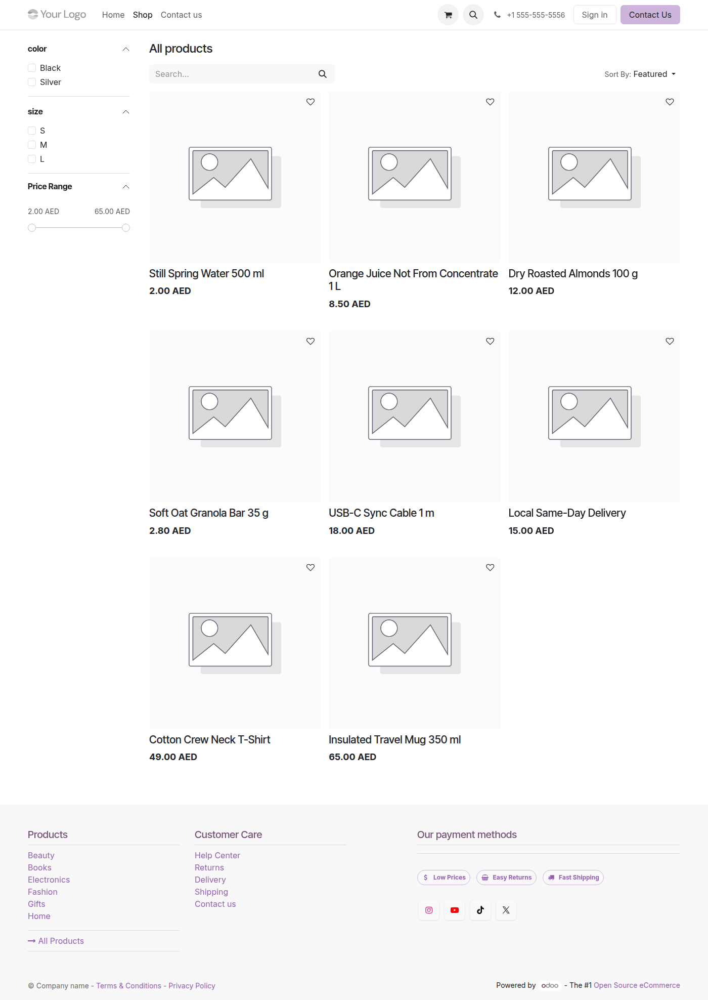

Corporate sales (B2B)
Key accounts, quotations, deliveries, invoicing, and salesperson attribution.
Live demo — one UAE company, corporate sales, eCommerce, and retail POS. Approx. 5–10 minutes.
Business objective: Show how a multi-channel retailer runs B2B, online shop, and hundreds of stores on one Odoo database — with clear cashier accountability and management visibility, without giving every till operator a full system login.
Presenter login (backend): open Odoo backend as admin (use your install password). Cashiers do not use this login — see section 3.
Open Commercial Demo DashboardAll revenue flows through the same chart of accounts, tax rules, and inventory — different front ends, one truth.
Key accounts, quotations, deliveries, invoicing, and salesperson attribution.

Online catalog and checkout into the same stock and accounting engine.

Store tills, sessions, cashiers, and real-time sales at every location.
Key message: Shift cashiers are employees only (hr.employee).
They select their name on the POS and enter a PIN. They never receive an Odoo user, email, or
backend password — reducing licences, IT overhead, and security risk. Managers use admin (or
POS Manager) in the backend to see who sold what, where.
| POS location | Employee (on till) | PIN | Backend user? | Open POS |
|---|---|---|---|---|
| POS-DXB-01 — Dubai Flagship | Demo Cashier — Dubai Flagship | 3001 |
No | Open POS |
| POS-RET-04 — Dubai Hills | Demo Cashier — Dubai Hills | 3002 |
No | Open POS |
| POS-RET-11 — Abu Dhabi Mall | Demo Cashier — Abu Dhabi Mall | 3003 |
No | Open POS |
| POS-RET-16 — Sharjah City Centre | Demo Cashier — Sharjah City Centre | 3004 |
No | Open POS |
| POS-RET-24 — Madinat Jumeirah | Demo Cashier — Madinat Jumeirah | 3005 |
No | Open POS |
390
Point-of-sale locations configured for Horizon Retail in this demo — one database, regional teams, consolidated reporting.
Today’s walkthrough uses five flagship malls (section 3). The full estate remains available for management dashboards and analysis.

Example shops: Dubai Flagship · Dubai Hills · Abu Dhabi Mall
At POS-DXB-01 — table service, kitchen display, and bar flow on one site.


Leadership monitors live KPIs: channel mix, top stores, top cashiers, regional POS teams vs sales targets (B2B invoiced and POS sales).


Gates, bootstrap scripts, SQL checks, and the complete screenshot archive for auditors and project teams. Not needed for a client walkthrough.
Full Technical Evidence / Build Story